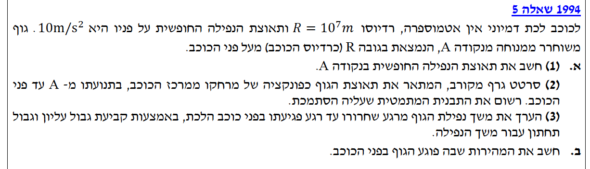
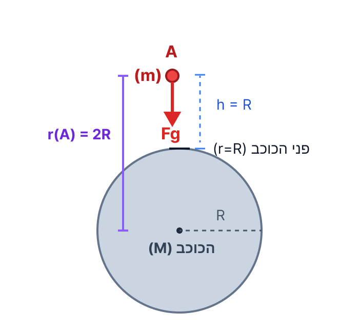
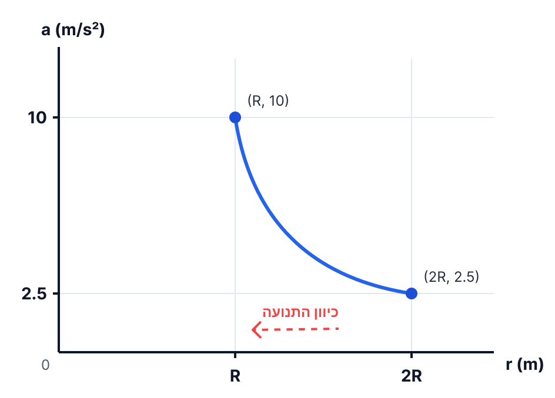
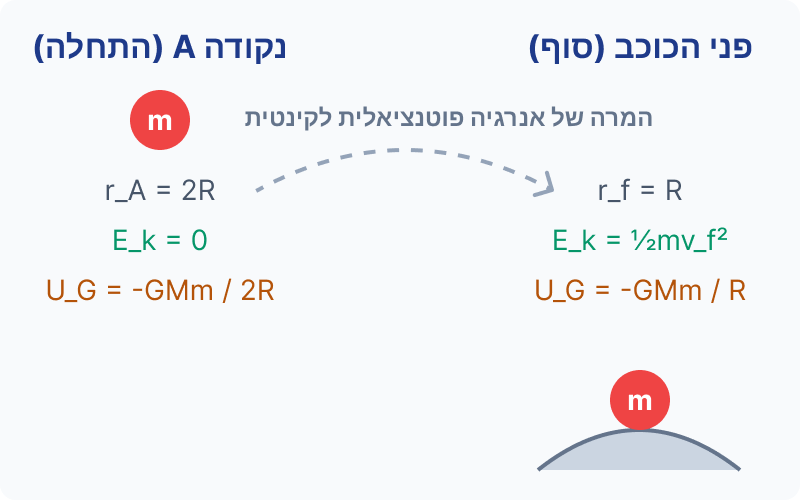

תנועה של גוף בשדה הכבידה של כוכב לכת דמיוני
בשאלה זו אנו חוקרים תנועה של גוף בשדה הכבידה של כוכב לכת דמיוני. בניגוד לבעיות קינמטיקה קרובות לפני כדור הארץ, כאן אנו עוסקים במרחקים גדולים מאוד, ולכן תאוצת הנפילה החופשית אינה קבועה ומשתנה בהתאם למרחק ממרכז הכוכב.


נפתח תחילה את הנוסחה הכללית לתאוצת הכובד במרחק \( r \) ממרכז כוכב בעל מסה \( M \). על פי החוק השני של ניוטון:
המסה של הגוף \( m \) מצטמצמת משני צידי המשוואה, ונקבל את הביטוי לתאוצה (אותה נסמן באות \( g \)):
על פני הכוכב, המרחק מהמרכז הוא \( r = R \), ולכן התאוצה שם היא:
בנקודה A, המרחק מהמרכז הוא \( r_A = 2R \). נציב זאת בנוסחת התאוצה:
נציב את הערך הידוע לנו עבור \( g_0 \):
תאוצת הנפילה החופשית בנקודה A היא: \( g_A = 2.5 \text{ m/s}^2 \)
התבנית המתמטית היא פונקציה המקיימת קשר של ריבוע הפוך. נציג את הנקודות הידועות לנו:
הגרף הוא עקומה העולה ככל ש- \( r \) קטן (הגוף מתקרב לכוכב, ולכן כוח המשיכה ותאוצתו גדלים).

התבנית המתמטית היא: \( a(r) = \frac{GM}{r^2} \). הגרף מראה עקומה היורדת כפונקציה של \( 1/r^2 \). התנועה עצמה מתרחשת מ- \( r=2R \) ל- \( r=R \), ולכן במהלך הנפילה גודל התאוצה גדל מ- 2.5 ל- 10.
הזמן הקצר ביותר יתקבל אם הגוף ייפול בתאוצה הגדולה ביותר האפשרית לכל אורך הדרך. נניח שהתאוצה הייתה קבועה ושווה לתאוצה המקסימלית: \( a_{max} = 10 \text{ m/s}^2 \).
הזמן הארוך ביותר יתקבל אם הגוף ייפול בתאוצה הקטנה ביותר האפשרית לכל אורך הדרך. נניח שהתאוצה הייתה קבועה ושווה לתאוצה המינימלית: \( a_{min} = 2.5 \text{ m/s}^2 \).
משך זמן הנפילה האמיתי \( t \) נמצא בגבולות: \( 1414.2 \text{ s} < t < 2828.4 \text{ s} \)

נשווה את האנרגיה הכוללת (סכום האנרגיה הקינטית והפוטנציאלית) במצב ההתחלתי A, למצב הסופי f (על פני הכוכב).
באגף שמאל (נקודה A): הגוף משוחרר ממנוחה, ולכן אין לו מהירות והאנרגיה הקינטית שלו היא אפס (\( E_{k,A} = 0 \)). האנרגיה הפוטנציאלית מחושבת על פי המרחק \( r_A = 2R \).
באגף ימין (פני הכוכב): לגוף יש מהירות ולכן יש לו אנרגיה קינטית המבוטאת בעזרת \( v_f \). האנרגיה הפוטנציאלית מחושבת על פי הרדיוס \( r_f = R \).
נשים לב שמסת הגוף הנופל, \( m \), מופיעה בכל האיברים במשוואה (האיבר הראשון הוא 0, ולכן לא משפיע). זהו רגע חשוב בפיזיקה - המהירות לא תלויה במסה של הגוף! נוכל לחלק את כל המשוואה ב- \( m \):
המטרה שלנו היא למצוא את \( v_f \). נעביר את איבר האנרגיה הפוטנציאלית מאגף ימין (עם סימן המינוס) לאגף שמאל, כך שהוא יהפוך לפלוס:
כעת נבצע חיסור שברים באגף שמאל. נשים לב ש- \( \frac{GM}{R} \) הוא למעשה "שלם אחד", בעוד ש- \( \frac{GM}{2R} \) הוא "חצי". שלם פחות חצי שווה חצי:
נכפיל את שני אגפי המשוואה ב-2 כדי להיפטר מהשברים, ונוציא שורש ריבועי כדי לקבל את המהירות:
הגענו לביטוי הסופי. אמנם קבוע הגרביטציה \( G \) מופיע בדף הנוסחאות, אך אין לנו את מסת הכוכב \( M \). כפי שציינו בנתונים, בסעיף א'(1) פיתחנו את הביטוי \( g_0 = \frac{GM}{R^2} \). ביטוי זה מאפשר לנו למצוא את מסת הכוכב. נוכל לבודד מתוכו את המכפלה כולה \( GM = g_0 R^2 \) ולהציב אותה בנוסחה שלנו:
נצמצם את \( R \) במונה ובמכנה:
עכשיו נשאר רק להציב את הנתונים המספריים שהביאו לנו: \( g_0 = 10 \text{ m/s}^2 \) ו- \( R = 10^7 \text{ m} \):
מהירות הפגיעה בפני הכוכב היא: \( v_f = 10,000 \text{ m/s} = 10^4 \text{ m/s} \)